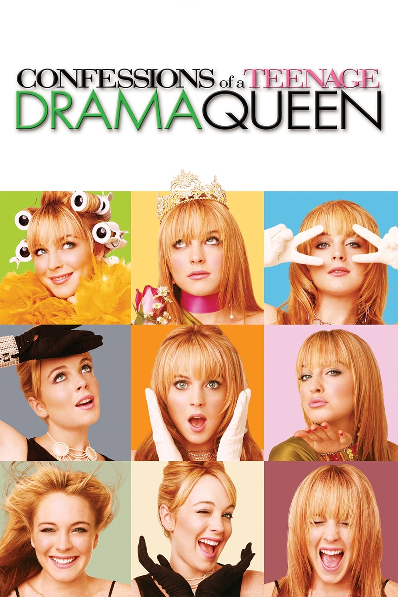

synopses
SHREK 2
Shrek 2 follows the adventures of Shrek and Fiona as they visit the kingdom of Far Far Away to meet Fiona's parents after their honeymoon. However, Fiona's parents, particularly her father, are shocked to see that their daughter has married an ogre. In an attempt to change things, King Harold secretly hires a fairy godmother and her son, Prince Charming, to break up the couple and restore Fiona to her human form. Through a series of comedic and heartfelt events, Shrek learns the true meaning of love and self-acceptance, while proving that true love transcends appearances.

CONFESSIONS OF A TEENAGE DRAMA QUEEN
Based on the teen novel of the same name, Confessions of a Teenage Drama Queen follows Mary "Lola" Steppe, a newly displaced teen, whose divorced mother has relocated from the trendy life of New York City to the urban sprawl of Dellwood, New Jersey. Out of place in the suburban town, Lola sets her sights on the lead in the school play while fantasizing about her favorite rock group and how her life should be. When she learns that her favorite rock group is disbanding and is going to put on their final farewell concert in New York City, Lola pulls out all the stops to make it to the concert and meet the lead singer, Stu Wolff.
CRIMINAL MINDS
Criminal Minds is a crime drama series that follows a team of elite FBI profilers from the Behavioral Analysis Unit (BAU) as they analyze the most dangerous criminals and serial killers in the country. Led by experienced agents, the team uses psychological profiling and criminal behavior analysis to predict the next moves of the perpetrators and prevent future crimes. Each episode focuses on a different case, delving into the minds of both the criminals and the investigators as they work against the clock to catch their targets.

NORMAL PEOPLE
Normal People is a drama that explores the complex relationship between Marianne and Connell, two teenagers from a small town in Ireland. Despite their differences in social class and personalities, they develop a deep and intense connection. The story follows their evolving relationship as they navigate the challenges of love, friendship, and personal growth through high school and university. As they struggle with communication, vulnerability, and their own insecurities, Normal People portrays a raw and emotional journey of love and self-discovery.